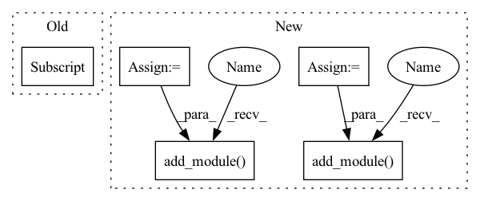

Pattern ID :21680

Before Change
super(CEM, self).__init__()
self.conv1 = conv_block(channels[0], fea_channel, kernel_size=1, padding=0, relu=False)
self.conv2 = nn.Sequential(
conv_block(channels[1], fea_channel, kernel_size=1, padding=0, relu=False),
nn.Upsample(scale_factor=2, mode="nearest"),
)
self.conv3 = nn.Sequential(
After Change
def __init__(self, channels, fea_channel, conv_block):
super(CEM, self).__init__()
for i, c in enumerate(channels):
layer_name = f"conv{i+1}"
if i == 0:
layer = conv_block(c, fea_channel, kernel_size=1, relu=False)
else:
layer = nn.Sequential(
conv_block(c, fea_channel, kernel_size=1, relu=False),
nn.Upsample(scale_factor=2**i, mode="nearest"),
)
self.add_module(layer_name, layer)
layer_name = f"conv{i+2}"
layer = nn.Sequential(
nn.AdaptiveAvgPool2d(1),
conv_block(channels[-1], fea_channel, kernel_size=1, relu=False),
)
self.add_module(layer_name, layer)
self.relu = nn.ReLU(inplace=True)
def forward(self, inputs):
out = None
In pattern: SUPERPATTERN
Frequency: 3
Non-data size: 5
Instances
Fragment ID: 69188191
Project Name: zhangheng19931123/mutualguide
Commit Name: 77156267d218aaa468e504be0ed373179fc281ee
Time: 2021-11-26
Author: zhangheng19931123@gmail.com
File Name: models/neck/ssd_neck.py
M Class Name: CEM
N Class Name: CEM
M Method Name: __init__(4)
N Method Name: __init__(4)
M Parent Class: nn.Module
N Parent Class: nn.Module
M File Name: models/neck/ssd_neck.py
N File Name: models/neck/ssd_neck.py
M Start Line: 14
M End Line: 19
N Start Line: 14
N End Line: 30
'>
Before Change
super(CEM, self).__init__()
self.conv1 = conv_block(channels[0], fea_channel, kernel_size=1, padding=0, relu=False)
self.conv2 = nn.Sequential(
conv_block(channels[1], fea_channel, kernel_size=1, padding=0, relu=False),
nn.Upsample(scale_factor=2, mode="nearest"),
)
self.conv3 = nn.Sequential(
After Change
def __init__(self, channels, fea_channel, conv_block):
super(CEM, self).__init__()
for i, c in enumerate(channels):
layer_name = f"conv{i+1}"
if i == 0:
layer = conv_block(c, fea_channel, kernel_size=1, relu=False)
else:
layer = nn.Sequential(
conv_block(c, fea_channel, kernel_size=1, relu=False),
nn.Upsample(scale_factor=2**i, mode="nearest"),
)
self.add_module(layer_name, layer)
layer_name = f"conv{i+2}"
layer = nn.Sequential(
nn.AdaptiveAvgPool2d(1),
conv_block(channels[-1], fea_channel, kernel_size=1, relu=False),
)
self.add_module(layer_name, layer)
self.relu = nn.ReLU(inplace=True)
def forward(self, inputs):
out = None
'>
Fragment ID: 69188190
Project Name: zhanghengdev/mutualguide
Commit Name: 77156267d218aaa468e504be0ed373179fc281ee
Time: 2021-11-26
Author: zhangheng19931123@gmail.com
File Name: models/neck/ssd_neck.py
M Class Name: CEM
N Class Name: CEM
M Method Name: __init__(4)
N Method Name: __init__(4)
M Parent Class: nn.Module
N Parent Class: nn.Module
M File Name: models/neck/ssd_neck.py
N File Name: models/neck/ssd_neck.py
M Start Line: 14
M End Line: 19
N Start Line: 14
N End Line: 30
'>
Before Change
out_channels_list[layer_idx] for layer_idx in block["layers"]
)
else:
out_channels = out_channels_list[block["layers"]]
curr_out_channels = out_channels
elif block["type"] == "shortcut":
module.add_module("shortcut_{}".format(i), EmptyLayer())
After Change
out_channels_list = []
for i, block in enumerate(blocks):
module = torch.nn.Sequential()
if block["type"] == "convolutional":
batch_normalize = "batch_normalize" in block
bias = not batch_normalize
kernel_size = block["size"]
padding = (kernel_size - 1) // 2 if "pad" in block else 0
in_channels = prev_layer_out_channels
out_channels = block["filters"]
conv = torch.nn.Conv2d(
in_channels=in_channels, out_channels=out_channels,
kernel_size=kernel_size, stride=block["stride"],
padding=padding, bias=bias
)
module.add_module("conv_{}".format(i), conv)
if batch_normalize:
bn = torch.nn.BatchNorm2d(num_features=out_channels)
module.add_module("batch_norm_{}".format(i), bn)
if block["activation"] == "leaky":
acti = torch.nn.LeakyReLU(negative_slope=0.1, inplace=True)
module.add_module("leaky_{}".format(i), acti)
// Update the number of current (output) channels.
curr_out_channels = out_channels
elif block["type"] == "maxpool":
stride = block["stride"]
maxpool = MaxPool2dPad(
kernel_size=block["size"], stride=stride
)
pdb.set_trace()
module.add_module("maxpool_{}".format(i), maxpool)
elif block["type"] == "route":
module.add_module("route_{}".format(i), EmptyLayer())
out_channels = sum(
out_channels_list[layer_idx] for layer_idx in block["layers"]
)
curr_out_channels = out_channels
elif block["type"] == "shortcut":
module.add_module("shortcut_{}".format(i), EmptyLayer())
elif block["type"] == "upsample":
// TODO: Upsample is deprecated in favor of Interpolate; consider
// using this and/or other interpolation methods?
upsample = torch.nn.Upsample(
scale_factor=block["stride"], mode="nearest"
)
module.add_module("upsample_{}".format(i), upsample)
elif block["type"] == "yolo":
anchors = [block["anchors"][idx] for idx in block["mask"]]
module.add_module("yolo_{}".format(i), YOLOLayer(anchors))
modules.append(module)
prev_layer_out_channels = curr_out_channels
out_channels_list.append(curr_out_channels)
'>
Fragment ID: 69188187
Project Name: nrsyed/pytorch-yolov3
Commit Name: 53b6d3990dbd9b11f39926c6ea780926a493e9e4
Time: 2020-03-15
Author: najam.r.syed@gmail.com
File Name: darknet.py
M Class Name: AnonimousClass
N Class Name: AnonimousClass
M Method Name: blocks2modules(2)
N Method Name: blocks2modules(2)
M Parent Class:
N Parent Class:
M File Name: darknet.py
N File Name: darknet.py
M Start Line: 88
M End Line: 153
N Start Line: 116
N End Line: 187